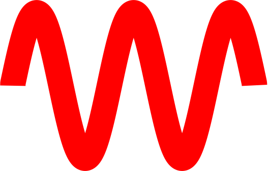

Wave Animations

This website contains the animations corresponding to the simulations created for the bachelor project
Chaos in the Wave Equation: Dynamic Boundary Conditions on a 1D Domain.
Part 1: variable length domain
Derivations
Coordinate transformation: analytical solution
We aim to solve the wave equation \( \frac{\partial^2 u}{\partial x^2} = \frac{\partial^2 u}{\partial t^2} \) with wave speed \( c = 1 \) on a domain \( [0, L(t)] \),
where the length \( L(t) \) depends on the time. To uniquely determine the wave solution, initial conditions are given. The initial position is given by a function \( f \),
and the initial velocity by a function \( g \), so \( u(x,0) = f(x) \) and \( \frac{\partial u}{\partial t}(x,0) = g(x) \) for each position \( x \) between \( 0 \) and \( L(0) \).
First, a coordinate transformation \( R \) from variables \( x \) and \( t \) to new variables \( s \) and \( r \) is used [1]:
\[ \begin{cases}
r + s = R(t + x) \, , \\
r - s = R(t - x) \, .
\end{cases} \]
This coordinate transformation preserves the shape of the wave equation, which is now \( \frac{\partial^2 u}{\partial r^2} = \frac{\partial^2 u}{\partial s^2} \).
We also require the left boundary \( x = 0 \) and the right boundary \( x = L(t) \) to be mapped on \( s = 0 \) and \( s = 1 \) respectively,
which gives a constraint on \( R \), namely
\[
R(t+L(t)) - R(t-L(t)) = 2
\]
must be fulfilled for each time \( t \).
In the new coordinates, solving the wave equation is simple since the domain is constant in time.
The solution can be written as an infinite series of eigenmodes: \( u = \sum_{n=-\infty}^{\infty} C_n \left( e^{-i n\pi (r-s)} - e^{-i n\pi (r+s)}\right) \).
Going back to the variables \( x \) and \( t \), the solution is
\[
u(x,t) = \sum_{n=-\infty}^{\infty} C_n \left( e^{-i n\pi R(t-x)} - e^{-i n\pi R(t+x)}\right) \, .
\]
The coefficients \( C_n \) are determined by the initial conditions:
\[
C_n = \frac{-i}{4\pi n} \int_{-L(0)}^{L(0)} \left(f'(x)+g(x)\right) e^{i\pi n R(x)} dx \, .
\]
Here, the functions \(g(x)\) and \(f(x)\) have been extended oddly (\( f(-x) = -f(x) \) and \( g(-x)=-g(x) \)).
As an example, suppose the length is linearly varying, so \( L = L_0 + vt \). Then it can be shown that a suitable transformation \( R \) is given by:
\[
\begin{align}
\begin{cases}
R(\xi) = \frac{\xi}{L_0} & \quad \text{for } L(t) = L_0 \, , \\
R(\xi) = 2 \frac{\ln\left| 1+\frac{v}{L_0}\xi \right|}{\ln\left(\frac{1+v}{1-v}\right)} & \quad \text{for } L(t) = L_0 + vt \quad (v \neq 0) \, .
\end{cases}
\end{align}
\]
Inverse method
It is easier to solve the inverse problem: to start with a transformation \( R \) and find a corresponding length \( L(t) \).
This allows for easy examples of lengths \( L \), for which \( R \) is analytically solvable.
The method works by solving the relation \( R(t+L) - R(t-L) = 2 \) to the function \( L \).
Alternatively, it is possible to differentiate this relation to obtain
\[
\dot{L}(t) = \frac{R'[t-L(t)] - R'[t+L(t)]}{R'[t-L(t)] + R'(t+L(t))} \, .
\]
Then solve this differential equation to find \( L \). Some simple functions that can be found this way are:
\[
\begin{array}{|l|l|}
\hline
L(t) & R(\xi) \\ \hline
\displaystyle L_0+vt & \displaystyle 2 \frac{\ln\left|1+\frac{v}{L_0}\xi\right|}{\ln\left(\frac{1+v}{1-v}\right)} \\ \hline
\displaystyle L_0 & \displaystyle \frac{\xi}{L_0} \\ \hline
\displaystyle \frac{1}{k} \text{arcsinh}\left( \frac{1}{Ae^{kt} - Be^{-kt}} \right) & \displaystyle A e^{k\xi} + B e^{-k\xi} \\ \hline
\displaystyle \frac{1}{k} \text{arcsinh}\left( \frac{1}{A}\text{csch}(kt+\varphi) \right) & \displaystyle A\cosh(k\xi+\varphi)\\ \hline
\displaystyle \frac{1}{k} \text{arcsinh}\left( \frac{1}{A}\text{sech}(kt+\varphi) \right) & \displaystyle A\sinh(k\xi+\varphi)\\ \hline
\displaystyle \frac{-1}{k\tan\left(\frac{2}{A}\right)} + \frac{\sqrt{1 + (1+(kt+\varphi)^2) \tan\left(\frac{2}{A}\right)^2}}{k\left|\tan\left(\frac{2}{A}\right)\right|} & A\arctan\left(k\xi+\varphi\right)\\ \hline
\displaystyle \frac{1}{2A(t+\varphi)} & \displaystyle A(\xi+\varphi)^2 \\ \hline
\end{array}
\]
Moore
The method proposed by Moore [2], makes use of perturbation theory for low velocities \( |\dot{L}| \) in order to find an expression for \( R \) starting from \( L \).
The resulting transformation \( R \) is given by an infinite series of functions:
\[
R(\xi) = \sum^\infty_{l=0} \int^\xi_0 \gamma_{l}(t') \, dt' \, ,
\]
where
\[
\begin{cases}
\gamma_0(t) = \frac{1}{L(t)} \, , \\
\gamma_l(t) = \sum_{i=1}^l \frac{-1}{(2i+1)!} L^{2i} \frac{\mathrm{d}^{2i} \gamma_{l-i}}{\mathrm{d}t^{2i}}(t) \quad \text{for } l > 0 \, .
\end{cases}
\]
Interpolation
This method aims to find a transformation \( R \) starting from the length \( L \). Since it is sufficient to find any transformation which satisfies \( R(t+L(t) = R(t-L(t) +2 \),
it is possible to (entirely) choose \( R \) on the domain \( [-L(0), L(0)] \), as long as it is continuous and \(R(L(0)) = R(-L(0)) + 2 \).
Further, by exploiting the relation \( R(t+L(t)) = R(t-L(t)) + 2\) it is possible to construct \( R \) beyond this domain.
To extend \( R(\xi) \) on certain points \( \xi \), it is hard to find a corresponding \( t \) such that \( \xi = t + L(t), \) which is necessary to use the previous relation.
Thus, in order to find \( R \), it is more convenient to choose a time array \( (t_i)_i \). Then, we want to find the values of \( R \) at the points \( \xi_i = t_i + L(t_i) \),
from the values of \( R \) at \( t_i - L(t_i) \). Often, the point \( t_i - L(t_i) \) will lie between two previously calculated \( \xi_j \) points,
in that case we use spline interpolation to find the value of \( R \) there.
There are multiple options for which \( R \) to choose on the initial domain \( [-L(0), L(0)] \). For example, we can use a linear polynomial \( R(\xi) = \frac{1}{L(0)} (\xi + L(0)) \).
If we also want the wave solution to be differentiable, we must demand that \( R \) is differentiable.
Then we could use a quadratic polynomial (or even a cubic if we want the wave solution to be twice differentiable).
Characteristics
Instead of finding \( R \) and calculating the coefficients using the initial conditions, this method directly calculates the wave,
while also using interpolation like the interpolation method.
Again, write the solution of the wave equation as
\[
u(x,t) = v(t+x) + w(t-x) \, .
\]
The boundary condition \( u(0,t) = 0 \) implies \( w(t) = -v(t) \), so
\[
u(x,t) = w(t-x) - w(t+x).
\]
From the initial conditions and the previous relation, \( w \) can be found on the domain \( [-L(0),L(0)] \).
Denote \( G(x) = \int_0^x g(x') dx' \), then (again extend \( f \) and \( g \) oddly):
\[
w(x) = -\frac{f(x)+G(x)}{2} \quad \text{for } x \in [-L(0), L(0)] \, .
\]
From the boundary condition \( u(L(t),t) = 0 \), the relation \[ w(t+L(t)) = w(t-L(t)) \] can be derived,
and by using the same protocol from the interpolation method, we can find \( w \) (and thus \( u \)) on its entire domain.
Numerical scheme
This method solves for the wave by discretising the \( x \)- and \( t \)-direction into \( N_x \) and \( N_t \) points respectively.
This way, we obtain a grid of \( N_x \cdot N_t \) points, with each point in the form \( (x=i \Delta x, t=j \Delta t) \),
where \( i \) and \( j \) indices, and with \( \Delta t = \frac{t_{\text{max}}}{N_t-1} \) and \( \Delta x = L(j\Delta t) \frac{1}{N_x-1} \) the grid spacings.
To apply the wave equation, we map the grid on a rectangular grid by using the transformation from \( x \) and \( t \) to new coordinates \( s = \frac{x}{L(t)} \) and \( \tau = t \).
The wave equation \( \frac{\partial^2 u}{\partial x^2} = \frac{\partial^2 u}{\partial t^2} \) in the new coordinates becomes
\[
\frac{\partial^2 u}{\partial \tau^2} + \frac{s^2 \dot{L}^2 - 1}{L^2} \frac{\partial^2 u}{\partial s^2} + \frac{-s\ddot{L} L + 2s\dot{L}^2}{L^2} \frac{\partial u}{\partial s} - \frac{2s\dot{L}}{L} \frac{\partial^2 u}{\partial s \partial \tau} = 0 \, .
\]
The grid spacing \( \Delta s = \frac{1}{N_x-1} \) does not depend on time anymore. Denote the values that \( u \) takes on the grid as \( u_{i,j} = u(i\Delta x, j\Delta t) \).
The derivatives in the wave equation can be approximated as finite differences:
\[
\begin{cases}
\displaystyle\frac{\partial^2 u}{\partial\tau^2} = \frac{ u_{i,j+1} + u_{i,j-1} - 2u_{i,j} }{\Delta t^2} + \mathcal{O}(\Delta t^2) \, ,\\
\displaystyle\frac{\partial^2 u}{\partial s^2} = \frac{ u_{i+1,j} + u_{i-1,j} - 2u_{i,j} }{\Delta s^2} + \mathcal{O}(\Delta s^2) \, , \\
\displaystyle\frac{\partial u}{\partial s} = \frac{ u_{i+1,j} - u_{i-1,j} }{2\Delta s} + \mathcal{O}(\Delta s^2) \, ,\\
\displaystyle\frac{\partial^2 u}{\partial s\partial \tau} = \frac{ u_{i+1,j+1} - u_{i+1,j-1} - u_{i-1,j+1} + u_{i-1,j-1} }{4\Delta s\Delta t} + \mathcal{O}(\Delta s^2 + \Delta t^2) \, .
\end{cases}
\]
The wave equation then gives a relation between the points \( u_{i-1,j+1} \), \( u_{i,j+1} \), \( u_{i+1,j+1} \) on the one hand
and \( u_{i-1,j} \), \( u_{i,j} \), \( u_{i+1,j} \), \( u_{i-1,j-1} \), \( u_{i,j-1} \), \( u_{i+1,j-1} \) on the other.
Together with the boundary conditions \( u_{0,j} = u_{N_x-1,j} = 0 \), this relation can be solved as a system of equations to obtain the layer of points at time \( (j+1) \Delta t \),
based on the two previous layers. To start the recursion, the first two layers at \( t = 0 \) and \( t = \Delta t \) can be calculated using the initial position \( f \) and the initial velocity \( g \).
Videos
Videos: Numerical scheme
The first video corresponds to Fig. 1.11 and illustrates why an approximation with central differences for the first time step is better than with forward differences.
Further, the second video shows the numerical errors induced by approximating the wave equation using finite differences.
These numerical errors are high if sharp pulses occur in the wave, see Fig. 1.24.
The last four videos show that the numerical solution can diverge if \( \lambda = \frac{\Delta t}{\Delta x} > 1 \),
or if the second derivative \( \ddot{L} \) is large, see the stability analysis from Sec. 1.7.3.
Videos: Simulations
Here, the first eight videos show the eight simulations discussed in Sec. 1.8, for which the corresponding error graphs are shown in Fig. 1.23.
Each row uses a different choice of length \( L \) from Tab. 1.3.
The initial conditions used are a standing sine wave (left column) and a wave packet (right column), from Tab. 1.2.
The last three videos show the wave with \( L(t) = 1 + \frac{1}{100} \sin(50 t) \), the method of characteristics is used as a benchmark.
The initial conditions are respectively a sine wave, gaussian, and a quadratic function.
Fig. 1.25 shows the error graph of the first two, the third one is similar.
Videos: Other examples
The first two videos show the performance of different choices of initial \( R \) on the interval \( [-L(0), L(0)] \):
a linear, quadratic and cubic polynomial, and a sigmoid-like function.
These simulations correspond to Figs. 1.6 and 1.7.
The third video shows why it is important that Eq. 1.5 is satisfied.
The video shows a standing sine wave for which the initial conditions are not compatible with the boundary condition.
A snapshot of this video is shown in Fig. 1.13.
Part 2: fixed length, dynamic boundary condition (Van der Pol) and chaos
Derivations
Characteristics method by Chen
In the second part of the thesis, we still use a fixed left boundary but swap the variable length for a dynamic boundary condition at the right boundary.
With a suited coordinate transformation, we assume \( c = 1 \) and \( L = 1 \).
For the right boundary condition, we use a "Van der Pol" condition from the paper of Chen [3], namely
\[
\frac{\partial u}{\partial x}(1,t) = \alpha \frac{\partial u}{\partial t}(1,t) - \beta \left( \frac{\partial u}{\partial t} \right)^3 \, ,
\]
where \( \alpha, \beta > 0 \) are parameters. We can write the wave solution as the sum of two functions: \( u(x,t) = v(x+t) + w(x-t) \).
The notation here is slightly different than in part 1, to better follow Chen.
Denote the derivatives of \( v \) and \( w \) as \( \nu \) and \( \omega \) respectively. By differentiating \( u \), one finds
\[
\begin{cases}
\nu(x+t) = \frac{1}{2} \left( \frac{\partial u}{\partial x}(x,t) + \frac{\partial u}{\partial t}(x,t) \right) \, , \\
\omega(x-t) = \frac{1}{2} \left( \frac{\partial u}{\partial x}(x,t) - \frac{\partial u}{\partial t}(x,t) \right) \, .
\end{cases}
\]
The right boundary condition can be rewritten using a (discontinuous) mapping \( F \) as \( \nu(1+t) = F(\omega(1-t)) \).
The left boundary condition implies \( \omega(t) = \nu(-t) \).
Together, both boundary conditions imply that \( \nu(\xi) = F(\nu(\xi-2)) \) for all \( \xi \geq 1 \).
Using the initial position and initial velocity, the function \( \nu \) can be found on the interval \( [-1,1] \):
\[
\nu(x) = \frac{1}{2} ( f'(x) + g(x) ) \, .
\]
Similar to the method of characteristics in part 1, the function \( \nu \) can be extended by using the relation \( \nu(\xi) = F(\nu(\xi-2)) \).
Then \( \nu \) can be integrated to find back \( v \) and the wave solution \( u \).
Numerical scheme
Similar to part 1, we discretise using a rectangular grid of \( N_x \) points in the spatial direction and \( N_t \) in the time direction.
The wave equation \( \frac{\partial^2 u}{\partial x^2} = \frac{\partial^2 u}{\partial t^2} \) can be translated to the grid by using the finite differences
\[
\begin{cases}
\displaystyle\frac{\partial^2 u}{\partial t^2} = \frac{ u_{i,j+1} + u_{i,j-1} - 2u_{i,j} }{\Delta t^2} + \mathcal{O}(\Delta t^2) \, ,\\
\displaystyle\frac{\partial^2 u}{\partial x^2} = \frac{ u_{i+1,j} + u_{i-1,j} - 2u_{i,j} }{\Delta x^2} + \mathcal{O}(\Delta x^2) \, .
\end{cases}
\]
This results in the relation (denote \( \lambda = \frac{\Delta t}{\Delta x} \) ):
\[
u_{i,j+1} = \lambda^2 u_{i+1,j} + 2(1-\lambda^2) u_{i,j} + \lambda^2 u_{i-1,j} - u_{i,j-1}
\]
for all \( 1 \leq i \leq N_x-1 \). The right boundary condition can be translated by approximating \( \nu(1+t) \) and \( \omega(1-t) \) as derivatives,
with finite differences. This can be done in multiple ways. A standard way is to express \( \nu(1+t) \) and \( \omega(1-t) \) as derivatives to \( x \) and \( t \),
and use the relation \( \nu(1+t) = F(\omega(1-t)) \). We call this the default scheme. Other ways of using finite differences are possible
(we call these 'big scheme', 'left-of-boundary scheme' and 'shifted scheme'). Together with the left boundary condition \( u_{0,j} = 0 \),
the values of the wave can be calculated for a full time layer at \( t = (j+1) \Delta t \), based on the two previous time layers at \( t = j\Delta t \) and \( t = (j-1) \Delta t \).
To start the recursive calculation, the first two layers can be found using the initial position \( f \) and the initial velocity \( g \).
Damped wave equation
As an extension to this part, we studied the damped wave equation
\[
\frac{\partial^2 u}{\partial x^2} = \frac{\partial^2 u}{\partial t^2} + \varepsilon \frac{\partial u}{\partial t} \, .
\]
Here, \( \varepsilon \) is a (small) parameter that indicates the damping of the wave solution.
In the case of the damped wave equation, the solution is not simply the sum of two functions depending on \( x \pm t \).
Instead, we depeloved a perturbation theory to find the wave solution in the limit of small damping \( \varepsilon \).
The wave solution is written as a series in \( \varepsilon \):
\[
u(x,t) = u_0(x,t) + \varepsilon u_1(x,t) + \varepsilon^2 u_2(x,t) + \dots \; .
\]
Here, \( u_0 \) is the wave solution in the undamped case and the other terms are correction terms.
In the thesis, we determined the first correction term \( u_1 \).
The numerical schemes for the undamped wave equation can be generalised for the case in which there is damping.
This is done by approximating the term \( \varepsilon \frac{\partial u}{\partial t} \) with the finite difference
\[
\frac{\partial u}{\partial t} = \frac{ u_{i,j+1} - u_{i,j-1} }{2\Delta t} + \mathcal{O}(\Delta t^2)
\]
to obtain the relation
\[
u_{i,j+1} = \frac{1}{1+\Delta t \frac{\varepsilon}{2}} \left[ \lambda^2 u_{i+1,j} + 2(1-\lambda^2) u_{i,j} + \lambda^2 u_{i-1,j} + (\Delta t \frac{\varepsilon}{2} - 1) u_{i,j-1} \right] \, .
\]
Videos
Videos: Cobweb diagrams
The simulations here accompany the cobweb diagrams, Fig. 2.11.
For each value of \( \alpha \) used in the diagram, a video of the wave with initial condition a sine function is shown.
Videos: Simulations from Chen
These videos show the simulations discussed in Sec. 2.3.4. These simulations were compared with the results of Chen [3].
The first video uses \( \alpha = \frac{1}{4} \), for which the mapping \( F \) is not chaotic.
In the second video, where \( \alpha = 8 \), the mapping is chaotic however.
Videos: Undamped wave equation
These six videos show a comparison of the 4 numerical schemes (shown as the first 4 entries in the legend) and the characteristics method (in green).
The first two videos illustrate the wave solution in the case of a fixed right boundary (left) and a freely moving right boundary (right), in the case \( \lambda = 1 \).
For these two cases, the mapping \( F \) is the identity function \( \text{Id} \) and the negative identity function \( -\text{Id} \) respectively.
The next two videos show the Van der Pol boundary condition in the case \( \lambda = 1 \), for a value of \( \alpha \) for which the map \( F \) is continuous
and a value of \( \alpha \) for which \( F \) is discontinuous and chaotic.
The last two videos show the same, but with \( \lambda < 1 \).
Videos: Damped wave equation
The first two videos here show a comparison of the first order perturbation theory and the best numerical scheme, the shifted scheme.
In the first video, a fixed right boundary was used, with \( F = \text{Id} \), while in the second video a Van der Pol boundary condition with \( \alpha = 8 \) was used.
The third video shows the numerical scheme in the case of large damping: the wave solution seems to slowly diverge to negative infinity in slow oscillations.
References
[1]
Dodonov, V. (2020). Fifty years of the dynamical Casimir effect. Physics, 2(1), 67-104.
[2]
Moore, G. T. (1970). Quantum theory of the electromagnetic field in a variable‐length one‐dimensional cavity. Journal of mathematical physics, 11(9), 2679-2691.
[3]
Chen, G., Hsu, S. B., Zhou, J., Chen, G., & Crosta, G. (1998). Chaotic vibrations of the one-dimensional wave equation due to a self-excitation boundary condition. Part I: Controlled hysteresis. Transactions of the american mathematical society, 350(11), 4265-4311.